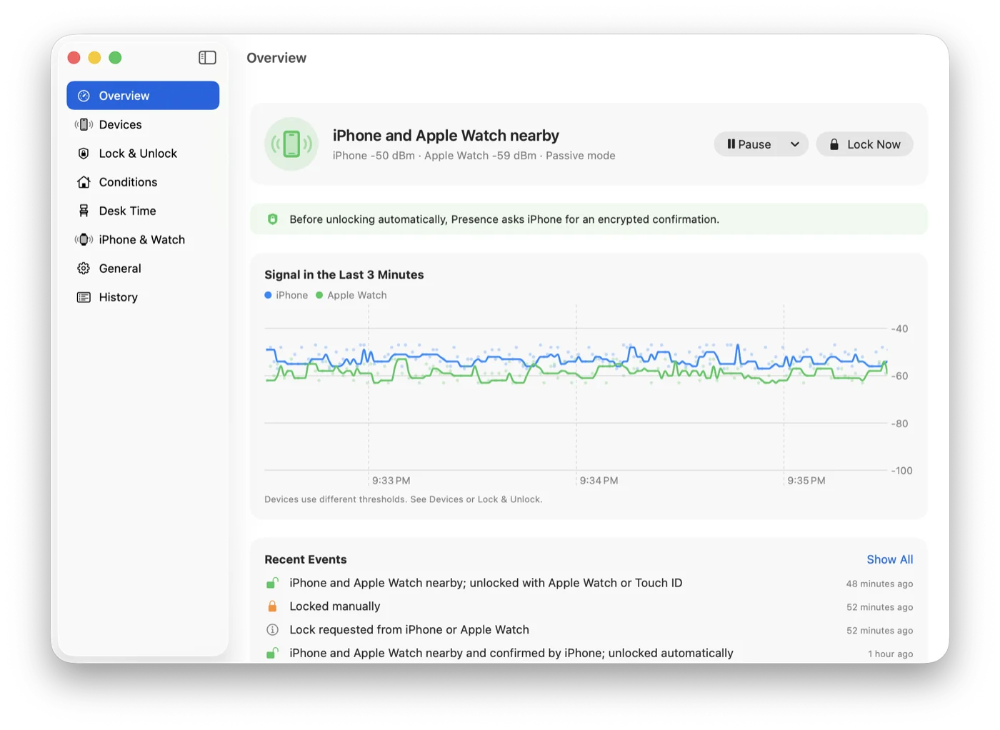
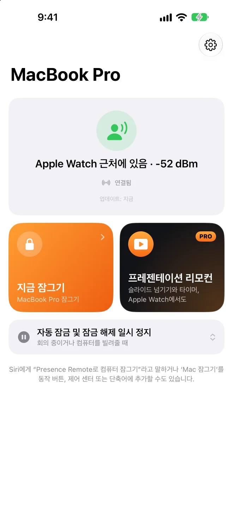
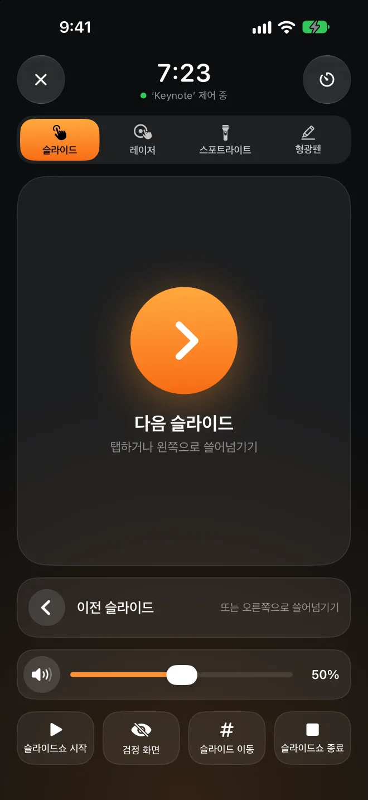

떠나면 잠깁니다.돌아오면 열립니다.
Presence는 Mac의 메뉴 막대에서 iPhone이나 Apple Watch가 늘 내보내는 Bluetooth 신호를 듣습니다. 신호가 약해지면 화면이 잠기고, 자리로 돌아오면 잠금이 해제됩니다. iPhone이나 Apple Watch에는 아무것도 설치하지 않아도 됩니다.
Mac 앱은 무료이며 오픈 소스입니다. macOS 26 이상이 필요합니다.
열립니다 여기까지 가면
잠깁니다
Apple Watch 근처에 있음−52 dBm
나를 오른쪽으로 드래그해 Mac이 언제 잠기는지 보세요. 그런 다음 다시 돌아와 보세요.
잘못 잠그는 것보다 조금 늦게 여는 편이 낫습니다.
Bluetooth 신호는 들쭉날쭉해서 몸을 돌리기만 해도 크게 달라집니다. Presence는 몇 가지 신중한 규칙을 따릅니다. 그래서 앉아 있는 동안에는 잠기지 않고, 다른 사람은 내 Mac에 들어올 수 없습니다.
한 번의 측정값이 아니라 몇 초간의 흐름
최근 4초 동안 받은 측정값의 중앙값을 쓰며, 측정값이 최소 3개는 있어야 합니다. 갑자기 한 번 튀거나 떨어진 값은 반영하지 않습니다.
잠그는 선과 여는 선, 두 개의 기준
잠금 임계값이 잠금 해제 임계값보다 낮아서, 그 사이에 서 있어도 잠겼다 풀렸다를 반복하지 않습니다. 기기마다 따로 보정할 수 있습니다. 잠금 해제하고 싶은 위치와 잠그고 싶은 위치에 각각 8초씩 서 있으면 됩니다.
아직 입력 중이면 기다립니다
신호가 약해져도 누군가 키보드나 마우스를 계속 사용하고 있으면 잠그지 않고 기다립니다.
잠금 해제 전에 iPhone에 확인합니다
Presence Remote를 쓰면 Mac은 암호를 입력하기 전에, 페어링할 때 교환한 키로 응답하도록 iPhone에 요청합니다. Bluetooth 신호를 위조하는 것만으로는 Mac의 잠금을 해제할 수 없습니다.
Apple Watch가 먼저
잠금 해제하기 전에 몇 초 기다려 macOS가 Apple Watch로 잠금을 해제할 수 있게 합니다. 그래도 Mac이 잠겨 있을 때만 Presence가 암호를 입력하며, 몇 글자마다 아직 로그인 화면인지 확인합니다.
잠가야 할 때는 잠그고, 아닐 때는 방해하지 않습니다.
모두 Mac 앱에 무료로 들어 있습니다.
발표 중에는 잠그지 않습니다
Keynote나 PowerPoint에서 슬라이드쇼를 재생하는 동안에는 자동 잠금이 일시 정지됩니다. 발표하러 앞으로 나가도 프로젝터 화면에 갑자기 로그인 화면이 뜨지 않습니다.
집에서는 느긋하게
신뢰하는 네트워크에 연결되어 있거나, 전원에 연결되어 있거나, 지정한 시간대가 아니면 자동으로 잠그지 않습니다. 네트워크는 라우터로 알아보므로 위치 권한이 필요 없습니다.
잠시 일시 정지
Mac을 잠깐 빌려주거나 회의에 들어갈 때는 15분에서 4시간까지 일시 정지할 수 있습니다. 끝났을 때 자리에 없으면 바로 잠급니다.
자리를 비운 사이 누가 열면 알 수 있습니다
근처에 없을 때 누군가 Mac의 잠금을 직접 해제하면 기록에 남습니다. 사진을 찍고 iPhone에 알림을 보낼 수도 있습니다.
오늘 얼마나 앉아 있었는지
착석 시간이 오늘과 최근 7일을 기록하고, 너무 오래 앉아 있으면 일어나라고 알려 줍니다.
BLEUnlock을 쓰고 있었다면
Presence는 BLEUnlock의 아이디어에서 출발해 최신 macOS에 맞게 새로 작성했습니다. 기기와 임계값을 클릭 한 번으로 가져올 수 있습니다.



무대에서는 휴대폰이 프레젠터가 됩니다.
리모컨을 따로 살 필요도, 수신기를 꽂을 필요도 없습니다. 휴대폰에서 손가락을 움직이면 큰 화면의 같은 위치에 빨간 점이나 스포트라이트, 형광펜 선이 나타납니다. 아래 휴대폰에서 직접 해 보세요.
레이저, 스포트라이트, 형광펜 중 하나를 고른 다음 휴대폰의 터치 패드를 누른 채로 드래그해 보세요. 형광펜 선은 몇 초 후 사라지고, 슬라이드를 넘기면 바로 지워집니다.
탭하거나 쓸어넘겨 슬라이드 넘기기
원하는 슬라이드로 이동하고, 화면을 검게 만들고, 슬라이드쇼를 시작하고 끝낼 수도 있습니다.
잠금 화면에서도 작동합니다
잠금 화면과 Dynamic Island에 슬라이드 넘김 버튼이 있어 잠금을 해제하지 않아도 됩니다.
Apple Watch도 프레젠터
탭하거나 Digital Crown을 돌리거나 이중 탭하세요. 왼쪽으로 쓸어넘기면 Mac 음량을 조절할 수 있습니다.
발표 타이머
발표 시간을 정해 두면 5분 남았을 때와 시간이 다 되었을 때 손목을 톡 두드려 알려 줍니다.
Mac 음량
슬라이드 속 영상 소리가 너무 크거나 작을 때 컴퓨터로 돌아가지 않고 조절할 수 있습니다. 큰 화면에 음량 표시가 뜨지 않습니다.
어떤 프레젠테이션 앱이든
Keynote, PowerPoint, Google 프레젠테이션, PDF 모두 사용할 수 있습니다. 빨간 점과 스포트라이트는 맨 위에 그려질 뿐 아무것도 클릭하지 않습니다.
잠금은 무료입니다. 프레젠터만 Pro입니다.
Mac 앱과 iPhone 및 Apple Watch용 Presence Remote는 무료입니다. 프레젠테이션 리모컨만 Presence Pro에 포함됩니다.
Mac 앱
오픈 소스이며 Apple의 공증을 받았고, 자동으로 업데이트됩니다.
- 떠나면 잠그고, 돌아오면 잠금 해제
- 발표 중이나 집에서는 잠그지 않음
- 기록과 착석 시간
Presence Remote
iPhone 및 Apple Watch용 동반 앱입니다.
- iPhone, Apple Watch 또는 제어 센터에서 잠그기
- 자동 잠금 일시 정지 및 재개
- Mac이 잠기거나 누군가 잠금을 해제하면 알림
- 잠금 해제 전 암호화 확인
Presence Pro
프레젠테이션 리모컨: 슬라이드, 레이저, 스포트라이트, 형광펜, 음량, 발표 타이머. iPhone과 Apple Watch에서 쓸 수 있습니다.
두 구독 모두 7일 무료 체험으로 시작합니다. 세 가지 모두 가족 공유를 지원합니다.
앱에서 업그레이드내 Mac은 내 휴대폰 말만 듣습니다.
계정도, 서버도 없습니다
Mac과 휴대폰은 인터넷을 거치지 않고 Bluetooth로 직접 통신합니다. 개발자는 사용자에게서 아무것도 받지 않습니다.
모든 명령은 암호화됩니다
페어링할 때 내 기기끼리만 공유하는 키가 만들어집니다. 모든 명령과 상태는 이 키로 암호화하고 검증하므로, 다른 사람의 휴대폰은 명령을 보낼 수 없습니다.
암호는 키체인에만 보관됩니다
잠금 해제에 쓰는 로그인 암호는 Mac의 키체인에 저장되며, Presence가 올바른 암호인지 확인한 다음에만 저장합니다.
오픈 소스
Mac 앱은 완전한 오픈 소스입니다. 어떻게 판단하고 어떻게 잠금 해제하는지 직접 확인할 수 있습니다.
자주 묻는 질문
휴대폰에 앱을 설치해야 하나요?
아니요. Presence는 iPhone과 Apple Watch가 원래 내보내는 Bluetooth 신호를 들으므로 Mac 앱만으로 잠그고 잠금 해제할 수 있습니다. Presence Remote를 설치하면 원격으로 잠그고, 알림을 받고, 잠금 해제 전에 암호화 확인을 더할 수 있습니다. Presence Pro에서는 프레젠테이션 리모컨도 쓸 수 있습니다.
무엇이 필요한가요?
Bluetooth LE를 지원하고 macOS 26 이상을 사용하는 Mac이 필요합니다. Presence Remote는 iOS 26 또는 watchOS 26 이상이 필요합니다. Apple Watch만 쓰거나, 고정된 주소로 주기적으로 신호를 보내는 다른 Bluetooth 기기를 쓸 수도 있습니다.
‘Apple Watch로 잠금 해제’와 무엇이 다른가요?
내장 기능은 잠금 해제만 할 뿐, 자리를 떠날 때 잠그지는 않습니다. Presence는 둘 다 합니다. 잠금 해제할 때는 Apple Watch가 Mac을 먼저 열 수 있도록 몇 초 기다리고, Apple Watch가 열지 못했을 때만 암호를 입력합니다. 두 기능은 함께 쓸 수 있습니다.
가만히 앉아 있는데 잠기지는 않나요?
신호가 몇 초 동안 계속 약해야 잠기며, 잠금 임계값은 잠금 해제 임계값보다 낮습니다. 아직 입력하거나 마우스를 쓰고 있으면 잠그지 않고 기다립니다. 그래도 너무 민감하다면 ‘기기’ 페이지에서 다시 보정하세요.
Mac 앱은 왜 Mac App Store에 없나요?
자동으로 잠금 해제하려면 로그인 암호를 입력해야 하는데, Mac App Store 앱은 이렇게 할 수 없습니다. 그래서 Mac 앱은 Apple의 공증을 받아 GitHub에서 다운로드하며, 자동으로 업데이트됩니다.
어떤 프레젠테이션 앱에서 작동하나요?
슬라이드를 넘길 때는 화살표 키를 보내므로 Keynote, PowerPoint, Google 프레젠테이션, PDF 뷰어에서 모두 작동합니다. 레이저, 스포트라이트, 형광펜은 Presence가 모든 것 위에 그리기 때문에 화면에 무엇이 떠 있든 쓸 수 있습니다. 먼저 Mac의 Presence에서 ‘iPhone 및 Watch › 프레젠테이션 리모컨 허용’을 켜세요.
배터리가 많이 닳나요?
iPhone과 Apple Watch는 원래 이 신호를 내보냅니다. Presence는 Mac에서 듣기만 하며, 평소 CPU 사용률은 1% 미만입니다.